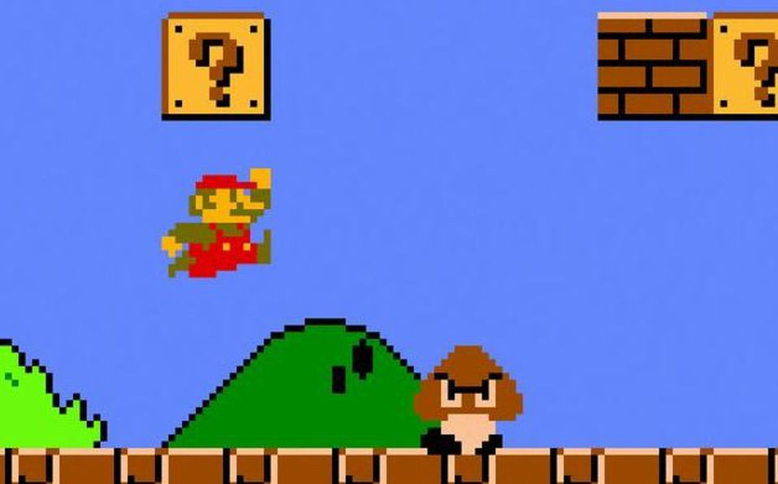
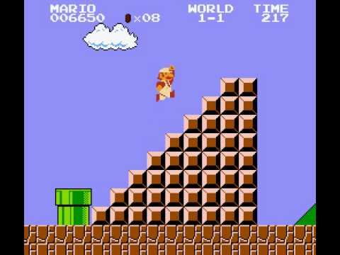
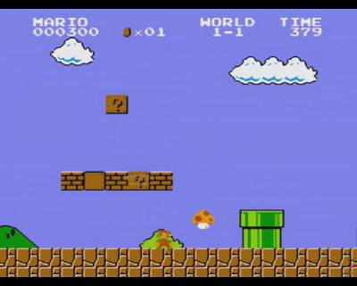
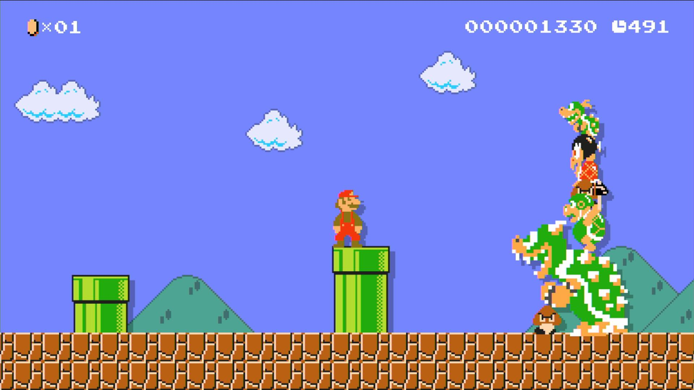

Game Zone
Welcome to Game Zone

Super Mario Bros
|  |  |
|  |  |
Fue producido por la compañía Nintendo, para la consola Nintendo Entertainment System(NES). El juego describe las aventuras de los hermanos Mario y Luigi. En esta ocasión ambos deben rescatar a la Princesa Peach que fue secuestrada por el rey de los Koopas, Bowser. A través de ocho diferentes mundos, los jugadores pueden controlar a alguno de los dos hermanos y deben enfrentarse finalmente tras los niveles correspondientes de cada mundo a los monstruos de cada castillo para rescatar a la Princesa Peach.
Super Mario Bros, fue el juego que popularizó al personaje de Mario, convirtiéndolo en el icono principal de Nintendo, y uno de los personajes más reconocidos de los videojuegos, así como su hermano menor Luigi. Además, presentó por primera vez a la Princesa Peach, Toad, Bowser, entre otros personajes. Este juego es considerado el primer videojuego de plataformas de desplazamiento lateral de Nintendo y se ha convertido en un hito debido a la trascendencia de su diseño y papel en la industria de los videojuegos.
Noticias

We add new free website templates frequently.
You can remove any link to our websites from this template you're free to use the template without linking back to us.

This is just a place holder so you can see how the site would look like.
The template is designed by free website templates for you for free you can replace all the text by your own text.
Play Now


Template Beauty
If you're looking for beautiful and professionally made templates you can find them at Template Beauty.